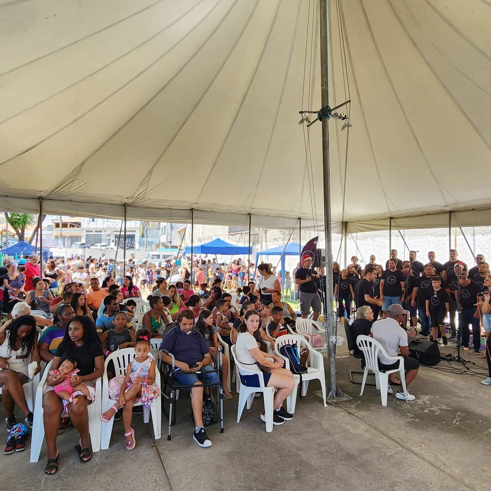
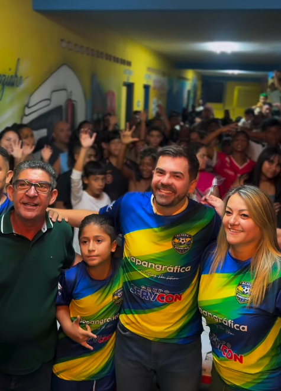
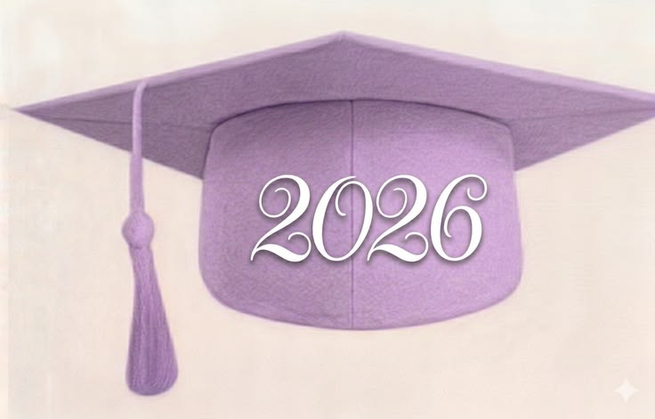
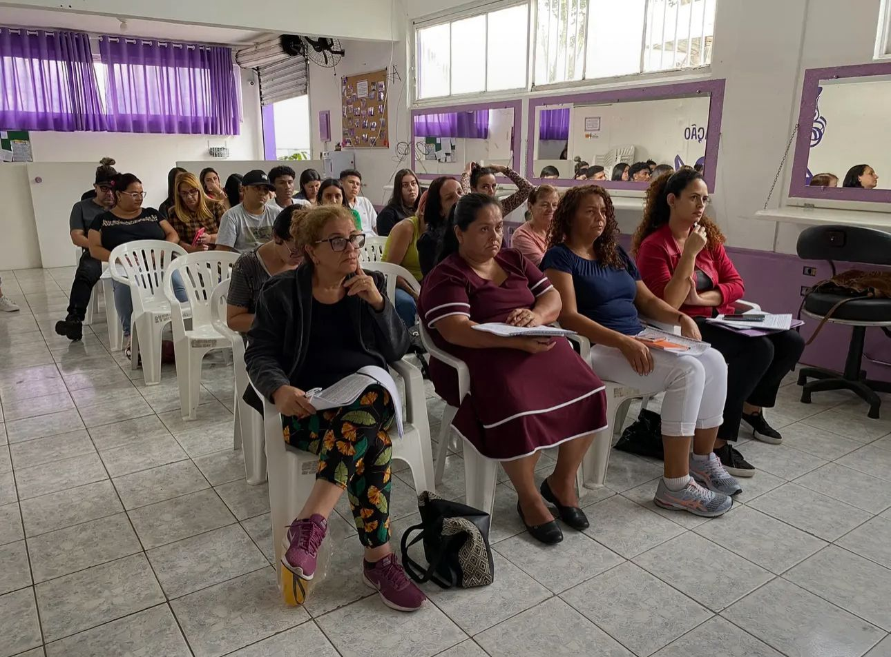
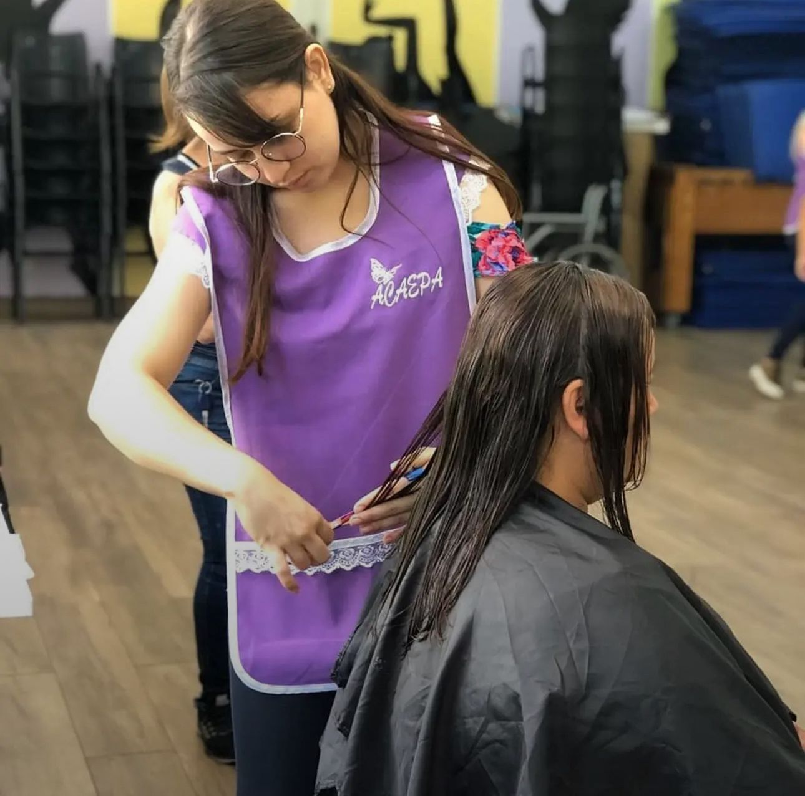
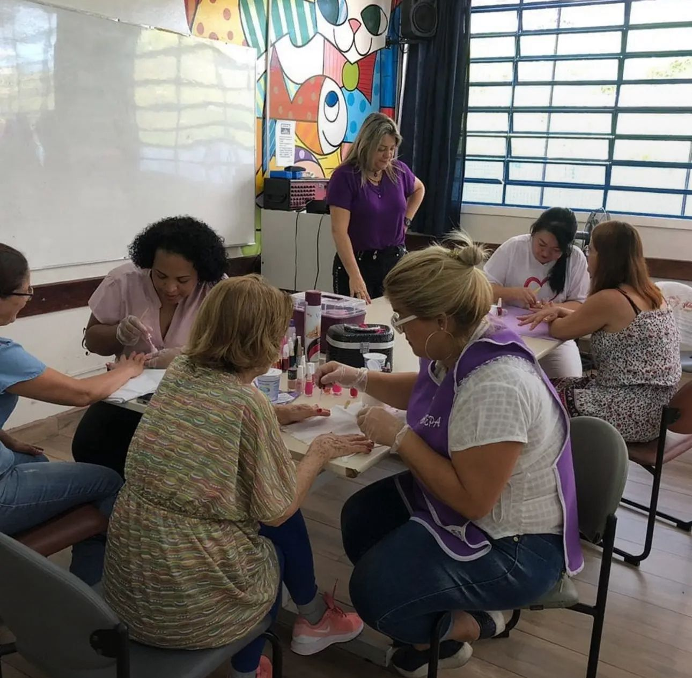
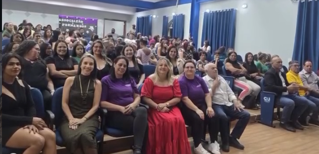

Blog
ACAEPA
Cada ação realizada carrega o propósito de construir novos caminhos através do conhecimento e da valorização das pessoas.
Cada ação realizada carrega o propósito de construir novos caminhos através do conhecimento e da valorização das pessoas.
Relatos que inspiram e mostram o impacto do nosso trabalho.
Conteúdos educativos para transformar realidades e abrir oportunidades.
Acreditamos no poder das pessoas e na força da comunidade.
Artigos novos toda semana com temas relevantes para você.

Os eventos promovidos pela associação criam momentos de troca, aprendizado e integração entre alunos, famílias e comunidade. Oficinas, palestras e apresentações ajudam a compartilhar conhecimento e inspirar novas oportunidades.Cada encontro fortalece ainda mais o propósito de transformar vidas através da educação.

O desenvolvimento pessoal é uma das partes mais importantes da formação. Através dos projetos e atividades, os participantes aprendem sobre liderança, comunicação, responsabilidade e trabalho em equipe. Essas habilidades ajudam não apenas na vida profissional, mas também no crescimento pessoal e social.

Quando uma pessoa aprende algo novo, ela amplia suas possibilidades para o futuro. A associação acredita no poder da educação como ferramenta de transformação social, inclusão e crescimento. Cada curso representa uma nova chance de descobrir talentos, desenvolver sonhos e construir um caminho melhor.

Entrar no mercado de trabalho pode parecer difícil no começo, mas preparação e confiança fazem toda diferença. Ter um currículo organizado, demonstrar interesse e investir em qualificação aumenta as chances de conquistar uma vaga. Os cursos da associação ajudam os alunos a se prepararem para entrevistas e desafios do ambiente profissional.

Os cursos oferecidos pela associação foram pensados para preparar os participantes para novas oportunidades profissionais. Entre as áreas disponíveis estão informática, administração, logística, atendimento e desenvolvimento pessoal. Além do aprendizado técnico, os alunos também desenvolvem comunicação, organização e trabalho em equipe.

Muitas pessoas chegam até a associação em busca de uma oportunidade para crescer profissionalmente e mudar de vida. Através dos cursos oferecidos, alunos desenvolvem novas habilidades, ganham confiança e descobrem novos caminhos para o futuro. Cada certificado representa mais do que aprendizado: representa superação, dedicação e esperança para conquistar novos sonhos.

A associação nasceu com o propósito de acolher, ensinar e transformar vidas através da educação e da inclusão social. Cada projeto desenvolvido busca oferecer oportunidades para pessoas que desejam aprender, crescer e acreditar novamente em seu potencial. Mais do que cursos, a associação constrói conexões, incentiva talentos e fortalece a comunidade através do conhecimento.

A tecnologia está presente em praticamente todas as áreas profissionais, e desenvolver conhecimentos nessa área se tornou essencial. Nos cursos da associação, os alunos aprendem desde informática básica até habilidades digitais importantes para o mercado de trabalho. Além do aprendizado técnico, os participantes descobrem novas possibilidades de carreira, criatividade e inovação através da tecnologia.